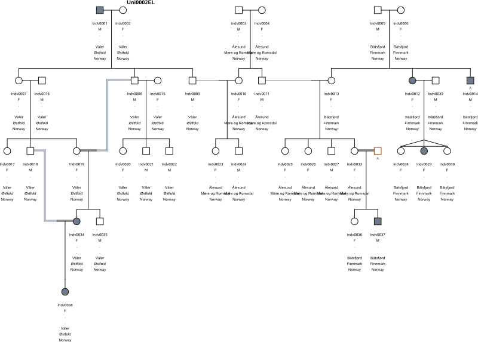
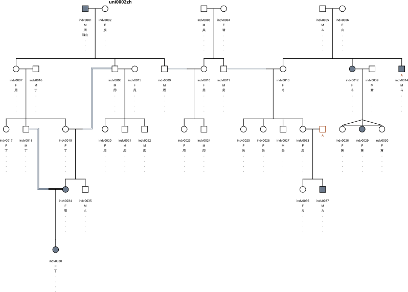
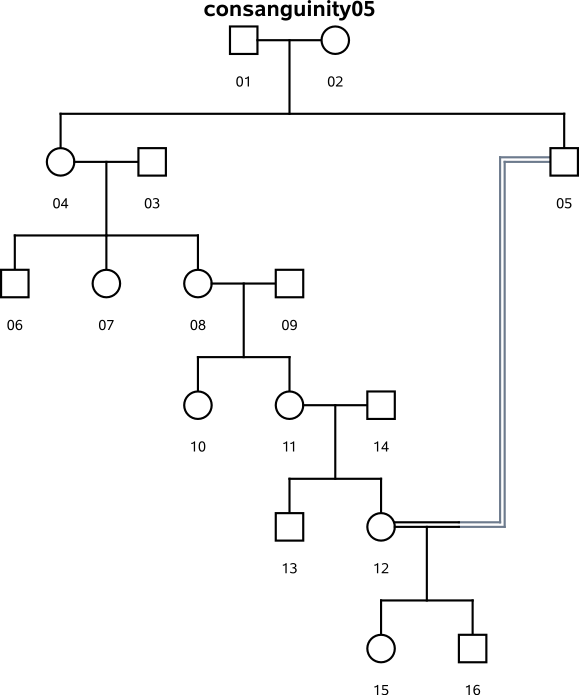

uni0002-BasicLatin

This data set contains the uni0002 pedigree with labels (IndividualId, Gender, Firstname, Surname, Town, County, State) in Basic Latin. This data set is used to test the display of data labels in Basic Latin.
Download uni0002-BasicLatin.data in Madeline flat file format.
Download uni0002-BasicLatin.labels list of labels.
Command line:
> minimadeline -l uni0002-BasicLatin.labels uni0002-BasicLatin.data
Madeline Rendering Test: 2006.08.30.ET Pass
uni0002-ExtendedLatin
This data set contains the uni0002 pedigree with labels (IndividualId, Gender, Firstname, Surname, Municipality, County, Country) in Extended Latin. This data set is used to test the display of data labels in Unicode Extended Latin. Extended Latin generally requires increased vertical line spacing to provide room for diacritical marks without overlapping.
Download uni0002-ExtendedLatin.ods in OpenOffice.org OASIS format.
Download uni0002-ExtendedLatin.labels list of labels.
Command line:
> minimadeline -l uni0002-ExtendedLatin.labels uni0002-ExtendedLatin.ods
Madeline Rendering Test: 2006.08.30.ET Fail: Labels not trimmed to width.
uni0002-ไทย

This data set contains the uni0002 pedigree with labels (IndividualId, Gender, ชื่อ , นามสกุล , ตำบล , อำเภอ , จังหวัด) in Thai. This data set is used as an example of displaying Unicode labels in a complex text layout (CTL) Indic-derived script on a pedigree drawing. Such scripts require increased vertical line spacing and have special glyph layout requirements.
Download uni0002-ไทย.ods in OpenOffice.org OASIS format.
Download uni0002-ไทย.labels list of labels.
Command line:
> minimadeline -l uni0002-ไทย.labels uni0002-ไทย.ods
Madeline Rendering Test: 2006.08.30.ET Pass.
uni0002-中文
This data set contains the uni0002 pedigree with labels (IndividualId, Gender, 姓 , 名字 , 村 , 鄉 , 省 ) in Chinese. This data set is used as an example of displaying Unicode labels in an East Asian (CJK) script on a pedigree drawing. The data file also contains data in Chinese that Madeline must interpret. For example, "男" and "女" are used respectively in the Gender column to indicate male and female.
This data set is also available in several formats for verifying Madeline's ability to seamlessly read different file formats.
Download uni0002-中文.ods in OpenOffice.org OASIS format.
Download uni0002-中文.xhtml in W3C XHTML table format.
Download uni0002-中文.madeline-xml in Madeline's XML format.
Download uni0002-中文.labels list of labels.
Command line:
> minimadeline -l uni0002-中文.labels uni0002-中文.{ods/xhtml/madeline-xml}
Madeline Rendering Test: 2006.08.30.ET Pass.
consanguinity01

The consanguinity01 pedigree contains a single uncle--neice marriage loop.
Download consanguinity01.data in Madeline flat file format.
Madeline Rendering Test: 2006.08.30.ET Pass
consanguinity02

The consanguinity02 pedigree is an expansion of the consanguinity01 pedigree which has a first-cousin--first-cousin marriage loop in addition to the uncle--neice marriage loop. One of the cousins is the offspring of the uncle--neice marriage, thus resulting in two loops in two generations.
Download consanguinity02.data in Madeline flat file format.
Madeline Rendering Test: 2006.08.30.ET Marginal -- Needs some work
consanguinity03

The consanguinity03 pedigree is an expansion of the consanguinity02 pedigree which has added an aunt-nephew loop in the same generation as the uncle-neice loop.
Download consanguinity03.data in Madeline flat file format.
Madeline Rendering Test: 2006.08.30.ET Fail
consanguinity04

The consanguinity04 pedigree has a great uncle -- great neice loop. This tests drawing of a pedigree in which consanguinity spans two generations instead of the more common single generation (i.e., uncle--neice).
Download consanguinity04.data in Madeline flat file format.
Madeline Rendering Test: 2006.08.30.ET Pass
consanguinity05
The consanguinity05 pedigree has a consanguinous loop that spans three generations instead of the more common single generation (i.e., uncle--neice).
Download consanguinity05.data in Madeline flat file format.
Madeline Rendering Test: 2006.08.30.ET Pass